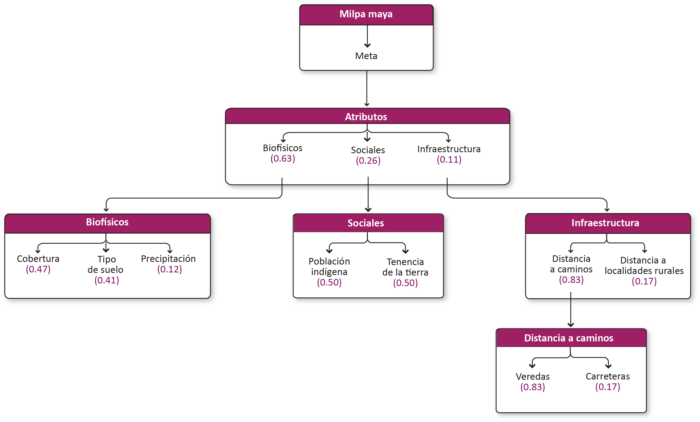

Milpa maya y apicultura-En proceso de actualización¶
Meta¶
Promover el fortalecimiento del sistema milpa maya tradicional y de la apicultura del Estado de Yucatán, para que la producción se realice de manera sustentable, promueva la conservación de la biodiversidad y del patrimonio biocultural y permita la innovación en la milpa maya, sin perder su esencia tradicional.
1.1 Modelo de decisión¶

1.2 Atributos¶
1.2.1 Biofísicos¶
| Atributo | Definición |
|---|---|
| Cobertura | Vegetación o uso de suelo actual |
| Tipo de suelo | Tipo de suelo (Edafología) |
| Disponibilidad de agua | Fuentes de acceso al agua |
1.2.1.1 Cobertura¶
Vegetación o uso de suelo actual.
Insumos
| Capa | Uso del suelo y vegetación |
|---|---|
| Fuente | Conjunto de datos vectoriales de la carta de Uso del suelo y vegetación. Serie VI. Conjunto Nacional INEGI |
| Año | 2017 |
| Campo | descripcio |
| Escala | 1:250,000 |
| Unidades | Adimensional |
Parámetros de la función de valor
| ID | Categoria | Importancia | FV |
|---|---|---|---|
| 3 | Agricultura de temporal | Muy alta | 1.00 |
| 9 | Selva baja | Muy alta | 1.00 |
| 10 | Selva mediana | Muy alta | 1.00 |
| 2 | Agricultura de riego | Baja | 0.25 |
| 8 | Pastizal | Baja | 0.25 |
| 11 | Sin vegetación | Baja | 0.25 |
| 1 | Acuícola | Nula | 0.00 |
| 4 | Asentamiento humano | Nula | 0.00 |
| 5 | Bosque cultivado/Palmar inducido | Nula | 0.00 |
| 6 | Cuerpo de agua | Nula | 0.00 |
| 7 | Manglar | Nula | 0.00 |
| 12 | Sábana | Nula | 0.00 |
| 13 | Tular | Nula | 0.00 |
| 14 | Vegetación de duna costera | Nula | 0.00 |
| 15 | Vegetación de petén | Nula | 0.00 |
| 16 | Vegetación halófila hidrófila | Nula | 0.00 |
| 17 | ND | Nula | 0.00 |
1.2.1.2 Tipo de suelo¶
Tipo de suelo (Edafología).
Insumos
| Capa | Edafología |
|---|---|
| Fuente | Conjunto de datos vectoriales edafológico. Serie II (Continuo Nacional) INEGI |
| Año | 2014 |
| Campo | tipo_suelo |
| Escala | 1:250,000 |
| Unidades | Adimensional |
1.2.1.3 Disponibilidad de agua¶
Fuentes de acceso al agua.
| Atributo | Definición |
|---|---|
| Precipitación | Precipitación promedio de mayo, junio y julio. |
1.2.1.3.1 Precipitación¶
Precipitación promedio de mayo, junio y julio.
Insumos
| Capa | Precipitación promedio de mayo, junio y julio |
|---|---|
| Fuente | Adaptado de: Precipitación mensual, periodo: 2000 (1980-2009) Instituto de Biología, UNAM |
| Año | 2019 |
| Resolución | 1000 m x 1000 m |
| Unidades | Adimensional |
1.2.3 Infraestructura¶
| Atributo | Definición |
|---|---|
| Distancia a caminos | Distancia a caminos principales, brechas, terracerías |
| Distancia a centros de acopio | Distancia a poblaciones principales. Existencia de grupos organizados de mercado. |
1.2.3.1 Distancia a caminos¶
Distancia a caminos principales, brechas, terracerías.
| Atributo | Definición |
|---|---|
| Carreteras | Distancia a carreteras y prolongación |
| Veredas | Distancia a caminos y veredas |
1.2.3.1.1 Carreteras¶
Distancia a carreteras y prolongación.
Insumos
| Capa | Distancia a carreteras y prolongaciones |
|---|---|
| Fuente | Red Nacional de Caminos (RNC) Red vial - INEGI |
| Año | 2019 |
| Campo | TIPO_VIAL |
| Escala | Sin dato |
1.2.3.1.2 Veredas¶
Distancia a caminos y veredas.
Insumos
| Capa | Distancia a veredas y caminos |
|---|---|
| Fuente | Red Nacional de Caminos (RNC) Red vial - INEGI |
| Año | 2019 |
| Campo | TIPO_VIAL |
| Escala | Sin dato |
| Unidades | Kilómetros |
1.2.3.2 Distancia a centros de acopio¶
Distancia a poblaciones principales. Existencia de grupos organizados de mercado.
| Atributo | Definición |
|---|---|
| Distancia a localidades rurales | Distancia localidades rurales < 2,500 habitantes. |
| Distancia a localidades rurales-urbanas | Distancia a localidades rurales-urbanas => 2500 y <15,000 habitantes. |
| Distancia a localidades urbanas | Distancia a localidades urbanas >= 15,000 habitantes. |
1.2.3.2.1 Distancia a localidades rurales¶
Distancia localidades rurales < 2,500 habitantes.
Insumos
| Capa | Distancia a localidades rurales (menos de 2,500 habitantes) |
|---|---|
| Fuente | [1] Polígonos de localidades. Marco Geoestadístico. Censo de Población y Vivienda INEGI y [2] Datos de indicador. Censo de Población y Vivienda. Principales resultados por localidad (ITER) INEGI |
| Año | 2020 |
| Campo | [2] POBTOT |
| Escala | Localidad |
| Unidades | Kilómetros |
1.2.3.2.2 Distancia a localidades rurales-urbanas¶
Distancia a localidades rurales-urbanas => 2500 y <15,000 habitantes.
Insumos
| Capa | Distancia a localidades rurales - urbanas (entre 2,500 y 15,000 habitantes) |
|---|---|
| Fuente | [1] Polígonos de localidades. Marco Geoestadístico. Censo de Población y Vivienda INEGI y [2] Datos de indicador. Censo de Población y Vivienda. Principales resultados por localidad (ITER) INEGI |
| Año | 2020 |
| Campo | [2] POBTOT |
| Escala | Localidad |
| Unidades | Kilómetros |
1.2.3.2.3 Distancia a localidades urbanas¶
Distancia a localidades urbanas >= 15,000 habitantes.
Insumos
| Capa | Distancia a localidades urbanas (con 15,000 habitantes o más) |
|---|---|
| Fuente | [1] Polígonos de localidades. Marco Geoestadístico. Censo de Población y Vivienda INEGI y [2] Datos de indicador. Censo de Población y Vivienda. Principales resultados por localidad (ITER) INEGI |
| Año | 2020 |
| Campo | [2] POBTOT |
| Escala | Localidad |
| Unidades | Kilómetros |
1.2.2 Sociales¶
1.2.2.1 Población indígena¶
Porcentaje de la población que habla una lengua indígena en el municipio.
Insumos
1.2.2.2 Tenencia de la tierra¶
Zonas de área común, parcelas y áreas no ejidales.
Insumos